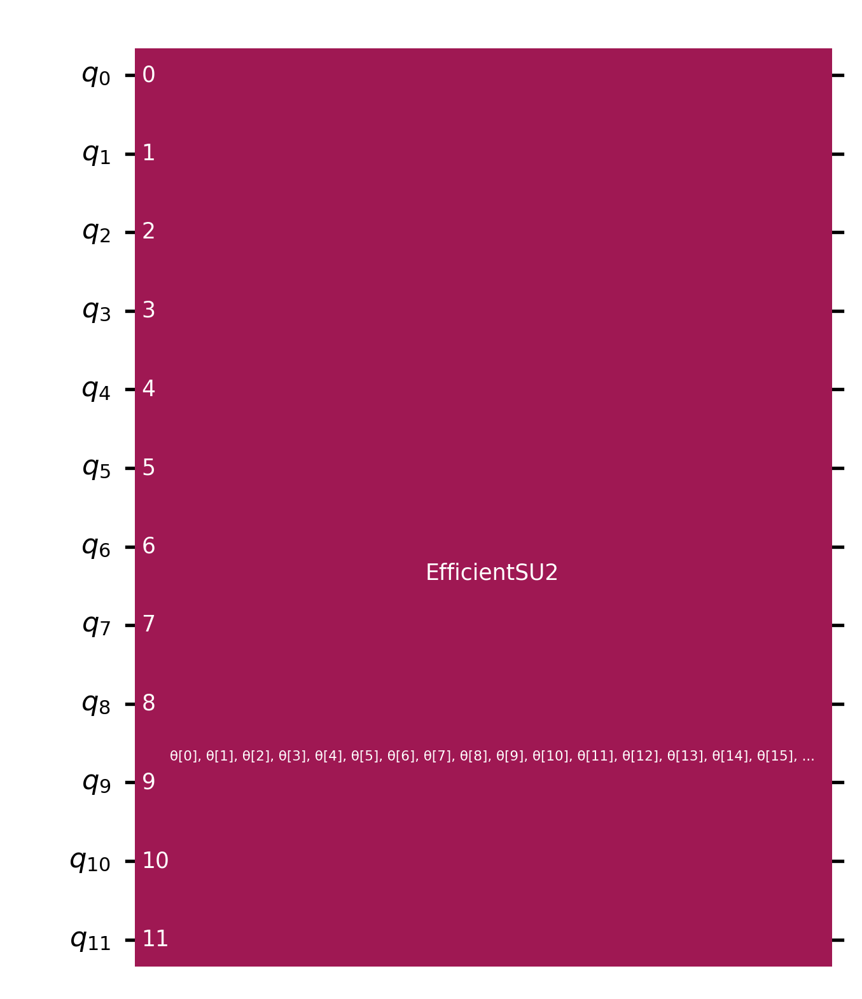
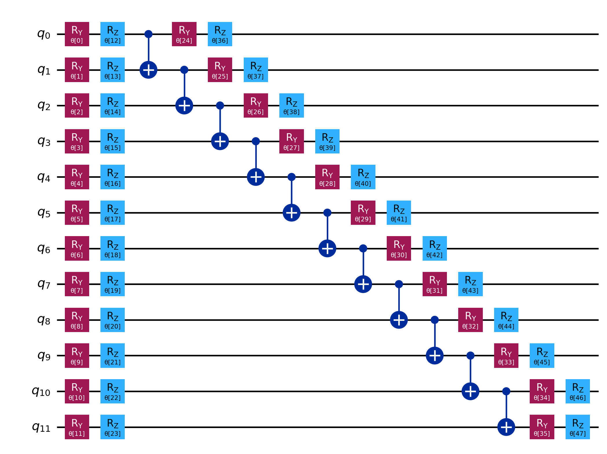
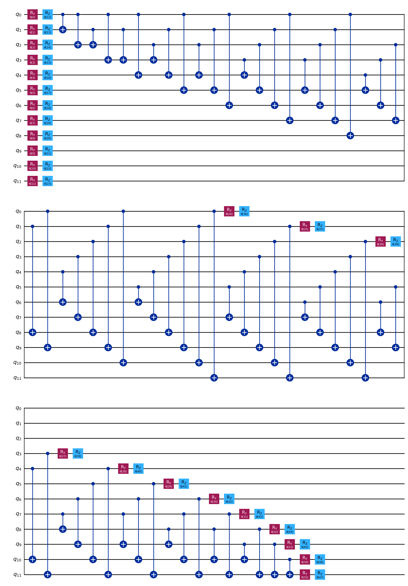

import numpy as np
import matplotlib.pyplot as plt
from scipy.optimize import minimize
from typing import SequenceQuantum Machine Learning in Practice
Solving an Optimization Problem with the Variational Quantum Eigensolver
0 - Problem Definition
We have a group of 6 people and we want to divide them into two teams, such that the skill level of each one is similar.
- Each person has a skill level
- Some people are goalkeepers
Objective: separate the players into two teams
teams must have equal (or similar) skills
- not everyone needs to be chosen
- teams do not necessarily need to have the same number of members
Constraints:
each player cannot be on more than one team
each team must have exactly one goalkeeper
Player Data
| Player | Skill | Goalkeeper? |
|---|---|---|
| Alice | 5 | No |
| Bob | 6 | Yes |
| Claire | 8 | Yes |
| Danny | 4 | No |
| Eve | 6 | No |
| Frank | 9 | No |
1 - Mapping
We will use binary variables to write the problem in the QUBO model.
The variables \((x_0,\dots, x_5)\) represent the players in Team A
The variables \((x_6,\dots, x_{11})\) represent the players in Team B
If \(x_i=1\), the corresponding player is in the team associated with \(i\); otherwise, \(x_i=0\).
- For example, \(x_0=1\) and \(x_6=0\) means that Alice is in Team A and is not in Team B.
Objective Function
If we are going to create two teams, we can define the function as:
\[Obj = \left(\sum s_A - \sum s_B\right)^2\]
Where \(\sum s_i\) represents the total skill of the players in Team \(i\).
We square it so that the value is always positive, preventing the algorithm from assigning all players to the same team.
- This error could happen if Team B’s skill is much higher than Team A’s, generating a very negative result.
- By squaring, the lowest possible value is zero (if the teams have equal skill).
To make the result generic for \(N\) teams (besides enabling us to make adjustments to the model of specific teams), we can generalize the objective function by calculating specific objectives for each team.
To do this, we can calculate the skill difference between each team \(i\) and the “fair” distribution of skills, \(ED\):
\[ED=\frac{\sum s_i}{N}\]
Where \(s_i\) is each person’s skill and \(N\) is the number of teams.
In this case, the objective function will be:
\[Obj=\sum_i O_i\]
Where:
\[O_i = \left(\sum (s_ix_i) - ED\right)\]
With \(s_i\) being the skill of each player \(i\) and \(x_i\) the variable indicating whether \(i\) should be on the team or not.
- For example, we are talking about Alice when \(i=0\) or \(i=6\), therefore, \(s_0=s_6=5\).
Expanding the function in our case, we have:
\[ED = \frac{\sum s_i}{2}=19\]
\[O_0 = \left(\sum_{i\in[0,5]}s_ix_i - ED \right)^2 = [(5x_0 + 6x_1 + 8x_2 + 4x_3 + 6x_4 + 9x_5) - ED]^2\] \[O_1 = \left(\sum_{i\in[6,11]}s_ix_i - ED \right)^2 = [(5x_6 + 6x_7 + 8x_8 + 4x_9 + 6x_{10} + 9x_{11}) - ED]^2\] \[Obj = [(5x_0 + 6x_1 + 8x_2 + 4x_3 + 6x_4 + 9x_5) - 19]^2 + [(5x_6 + 6x_7 + 8x_8 + 4x_9 + 6x_{10} + 9x_{11}) - 19]^2\]
Although this is a valid QUBO model problem, we can still encounter issues, for example:
- Allocating all players to a single team
- Allocating one player to all teams
- Not allocating players, keeping \(N\) teams with \(0\) members (consequently, \(Obj=0\), as we wanted, but not in a correct way)
To get around possible problems, we add constraints to the model.
Penalty Functions
For each constraint in the problem, we add a term to our model containing a function representing it.
The first constraint (a player cannot be on more than one team) can be written as:
\[x + y \leq 1\]
Since our variables can only take values \(0\) or \(1\), the inequality forces at least one of the variables to be equal to \(0\).
This type of constraint is so common that we have a ready-made penalty function for it:
\[\lambda(xy)\]
Where \(\lambda\) is a penalty constant, which will be decided later.
In this case, for each player (and their associated pair of variables), we will have a penalty term. For example, for Alice:
\[x_0+x_6 \leq 1 \xrightarrow{} \lambda_1(x_0x_6)=c_1\]
Our second type of constraint concerns the goalkeepers; for this, we simply do something similar.
To ensure that each goalkeeper is in at most one of the teams, we create a constraint stating that we cannot have more than one goalkeeper in a given team.
Since our example has two goalkeepers:
\[x_1+x_2 \leq 1 \xrightarrow{} \lambda_2(x_1x_2)=c_7\] \[x_7+x_8 \leq 1 \xrightarrow{} \lambda_2(x_7x_8)=c_8\]
We will add the penalty functions to the objective function terms, ensuring that the constraints apply.
To choose the \(\lambda\) values, we need to keep in mind that:
- We normally use integer values
- They must be large enough to increase the objective function value if the constraint is violated
- They cannot be too high, so as not to bias the objective function
- The model would prioritize satisfying all constraints over minimizing the function
- They cannot be too low, otherwise the model would allow too many violations
Mapping Code
Thus, our final function will be the cost function \(C\) such that:
\[C = Obj + \sum c_i\]
Where \(c_i\) are the penalty functions.
Therefore:
\[C = \sum O_i + \sum c_i\] \[C = \left(\sum_{i\in[0,5]}s_ix_i - ED \right)^2 + \left(\sum_{i\in[6,11]}s_ix_i - ED \right)^2 + \lambda_1(x_0x_6 + \dots + x_5x_{11}) + \lambda_2(x_1x_2 + x_7x_8)\]
We can finally map our problem to a quantum computer using Qiskit.
from qiskit import QuantumCircuit
from qiskit.circuit.library import EfficientSU2from qiskit_aer.primitives import Estimator as AerEstimator
from qiskit_aer.primitives import Sampler as AerSamplerfrom qiskit_optimization import QuadraticProgram
from qiskit_optimization.converters import QuadraticProgramToQubo# Problem data
players_data = [
{"name": "Alice", "strength": 5, "isGoalkeeper": False},
{"name": "Bob", "strength": 6, "isGoalkeeper": True },
{"name": "Claire", "strength": 8, "isGoalkeeper": True },
{"name": "Danny", "strength": 4, "isGoalkeeper": False},
{"name": "Eve", "strength": 6, "isGoalkeeper": False},
{"name": "Frank", "strength": 9, "isGoalkeeper": False},
]
teams = ["Alpha", "Beta"]
num_players = len(players_data)
num_teams = len(teams)strengths = [p['strength'] for p in players_data]
goalkeeper_indices = [i for i, p in enumerate(players_data) if p['isGoalkeeper']]total_strength = sum(strengths)
equal_dist = total_strength / num_teams# Create the optimization model
qp = QuadraticProgram("FootballTeamSelection")# 1. Define binary variables
for i in range(num_players):
for t in range(num_teams):
qp.binary_var(name=f'x_{i}_{t}')The objective function in the code comes from the expansion of our \(O_i\). Let \(X_i\) be the total strength of team \(i\):
\[O_i = \left(X_i - ED\right)^2 = X_i^2 - 2\cdot X_i\cdot ED + ED^2\]
- \(X_i^2\) comes from the total team strength; in the expansion, each player \(i\) is multiplied by every player \(j\) on the same team (since it is the multiplication of a sum).
- That is why we say this is the quadratic term, as it depends on two players at a time.
- \((-2)\cdot X_i\cdot ED\) is a coefficient that depends only on each player \(i\) once.
- That is why we say this is the linear term, as it only varies with one player.
- \(ED^2\), in turn, does not depend on any player.
- Since its value is always the same, we call it the constant term.
# 2. Define the objective function
linear_coeffs = {}
quadratic_coeffs = {}
constant = num_teams * (equal_dist ** 2)
for t in range(num_teams):
for i in range(num_players):
# Linear term:
var_name = f'x_{i}_{t}'
linear_coeffs[var_name] = -2 * strengths[i] * equal_dist
for j in range(num_players):
# Quadratic term:
var1_name = f'x_{i}_{t}'
var2_name = f'x_{j}_{t}'
quadratic_coeffs[(var1_name, var2_name)] = strengths[i] * strengths[j]
qp.minimize(constant=constant, linear=linear_coeffs, quadratic=quadratic_coeffs)# 3. Add constraints
# Each player in exactly one team
for i in range(num_players):
player_assignment_vars = {f'x_{i}_{t}': 1 for t in range(num_teams)}
qp.linear_constraint(linear=player_assignment_vars, sense='==', rhs=1, name=f'player_{i}_assignment')
# At most one goalkeeper per team
for t in range(num_teams):
goalkeeper_assignment_vars = {f'x_{i}_{t}': 1 for i in goalkeeper_indices}
qp.linear_constraint(linear=goalkeeper_assignment_vars, sense='<=', rhs=1, name=f'team_{t}_goalkeeper')print("Optimization Model (QuadraticProgram) defined.")
print(qp.prettyprint())Optimization Model (QuadraticProgram) defined.
Problem name: FootballTeamSelection
Minimize
25*x_0_0^2 + 60*x_0_0*x_1_0 + 80*x_0_0*x_2_0 + 40*x_0_0*x_3_0 + 60*x_0_0*x_4_0
+ 90*x_0_0*x_5_0 + 25*x_0_1^2 + 60*x_0_1*x_1_1 + 80*x_0_1*x_2_1
+ 40*x_0_1*x_3_1 + 60*x_0_1*x_4_1 + 90*x_0_1*x_5_1 + 36*x_1_0^2
+ 96*x_1_0*x_2_0 + 48*x_1_0*x_3_0 + 72*x_1_0*x_4_0 + 108*x_1_0*x_5_0
+ 36*x_1_1^2 + 96*x_1_1*x_2_1 + 48*x_1_1*x_3_1 + 72*x_1_1*x_4_1
+ 108*x_1_1*x_5_1 + 64*x_2_0^2 + 64*x_2_0*x_3_0 + 96*x_2_0*x_4_0
+ 144*x_2_0*x_5_0 + 64*x_2_1^2 + 64*x_2_1*x_3_1 + 96*x_2_1*x_4_1
+ 144*x_2_1*x_5_1 + 16*x_3_0^2 + 48*x_3_0*x_4_0 + 72*x_3_0*x_5_0 + 16*x_3_1^2
+ 48*x_3_1*x_4_1 + 72*x_3_1*x_5_1 + 36*x_4_0^2 + 108*x_4_0*x_5_0 + 36*x_4_1^2
+ 108*x_4_1*x_5_1 + 81*x_5_0^2 + 81*x_5_1^2 - 190*x_0_0 - 190*x_0_1
- 228*x_1_0 - 228*x_1_1 - 304*x_2_0 - 304*x_2_1 - 152*x_3_0 - 152*x_3_1
- 228*x_4_0 - 228*x_4_1 - 342*x_5_0 - 342*x_5_1 + 722
Subject to
Linear constraints (8)
x_0_0 + x_0_1 == 1 'player_0_assignment'
x_1_0 + x_1_1 == 1 'player_1_assignment'
x_2_0 + x_2_1 == 1 'player_2_assignment'
x_3_0 + x_3_1 == 1 'player_3_assignment'
x_4_0 + x_4_1 == 1 'player_4_assignment'
x_5_0 + x_5_1 == 1 'player_5_assignment'
x_1_0 + x_2_0 <= 1 'team_0_goalkeeper'
x_1_1 + x_2_1 <= 1 'team_1_goalkeeper'
Binary variables (12)
x_0_0 x_0_1 x_1_0 x_1_1 x_2_0 x_2_1 x_3_0 x_3_1 x_4_0 x_4_1 x_5_0 x_5_1
converter = QuadraticProgramToQubo()
qubo = converter.convert(qp)
hamiltonian, offset = qubo.to_ising()
num_qubits = hamiltonian.num_qubitsprint(f"The problem was mapped to a Hamiltonian of {num_qubits} qubits.")The problem was mapped to a Hamiltonian of 12 qubits.print(hamiltonian)SparsePauliOp(['IIIIIIIIIZII', 'IIIIIIIZIIII', 'IIIIIIIIZIII', 'IIIIIIZIIIII', 'IIIIIIIIIIZZ', 'IIIIIIIIIZIZ', 'IIIIIIIZIIIZ', 'IIIIIZIIIIIZ', 'IIIZIIIIIIIZ', 'IZIIIIIIIIIZ', 'IIIIIIIIZIZI', 'IIIIIIZIIIZI', 'IIIIZIIIIIZI', 'IIZIIIIIIIZI', 'ZIIIIIIIIIZI', 'IIIIIIIIZZII', 'IIIIIIIZIZII', 'IIIIIZIIIZII', 'IIIZIIIIIZII', 'IZIIIIIIIZII', 'IIIIIIZIZIII', 'IIIIZIIIZIII', 'IIZIIIIIZIII', 'ZIIIIIIIZIII', 'IIIIIIZZIIII', 'IIIIIZIZIIII', 'IIIZIIIZIIII', 'IZIIIIIZIIII', 'IIIIZIZIIIII', 'IIZIIIZIIIII', 'ZIIIIIZIIIII', 'IIIIZZIIIIII', 'IIIZIZIIIIII', 'IZIIIZIIIIII', 'IIZIZIIIIIII', 'ZIIIZIIIIIII', 'IIZZIIIIIIII', 'IZIZIIIIIIII', 'ZIZIIIIIIIII', 'ZZIIIIIIIIII'],
coeffs=[-1444.25+0.j, -1444.25+0.j, -1444.25+0.j, -1444.25+0.j, 8665.5 +0.j,
15. +0.j, 20. +0.j, 10. +0.j, 15. +0.j, 22.5 +0.j,
15. +0.j, 20. +0.j, 10. +0.j, 15. +0.j, 22.5 +0.j,
8665.5 +0.j, 1468.25+0.j, 12. +0.j, 18. +0.j, 27. +0.j,
1468.25+0.j, 12. +0.j, 18. +0.j, 27. +0.j, 8665.5 +0.j,
16. +0.j, 24. +0.j, 36. +0.j, 16. +0.j, 24. +0.j,
36. +0.j, 8665.5 +0.j, 12. +0.j, 18. +0.j, 12. +0.j,
18. +0.j, 8665.5 +0.j, 27. +0.j, 27. +0.j, 8665.5 +0.j])2 - VQE Preparation
Now that we have our Hamiltonian operator, we can start defining the VQE itself.
Since we will use simulators, we do not need to worry about the transpiler (complex optimization that prepares the circuit for the chosen real hardware) or error mitigation. Therefore, let’s start with the Ansatz.
Ansatz
It is a parameterized quantum circuit. The VQE will try to find the parameters that prepare the state of lowest energy.
EfficientSU2is a common choice, which tends to be good in many cases.
Being a circuit, under the hood it implements logic gates and entanglement modes.
For educational purposes, we can check the internal circuit, but it is not strictly necessary.
ansatz = EfficientSU2(num_qubits, reps=1, entanglement='linear')
ansatz.draw("mpl")/tmp/ipykernel_700894/3793753533.py:1: DeprecationWarning: The class ``qiskit.circuit.library.n_local.efficient_su2.EfficientSU2`` is deprecated as of Qiskit 2.1. It will be removed in Qiskit 3.0. Use the function qiskit.circuit.library.efficient_su2 instead.
ansatz = EfficientSU2(num_qubits, reps=1, entanglement='linear')
ansatz.decompose().draw("mpl")
We can alter parameters, such as repetition (creates more layers of rotations and CNOT gates) and entanglement type.
For example, see the circuit with full entanglement:
EfficientSU2(num_qubits, reps=1, entanglement='full').decompose().draw("mpl")/tmp/ipykernel_700894/2482604393.py:1: DeprecationWarning: The class ``qiskit.circuit.library.n_local.efficient_su2.EfficientSU2`` is deprecated as of Qiskit 2.1. It will be removed in Qiskit 3.0. Use the function qiskit.circuit.library.efficient_su2 instead.
EfficientSU2(num_qubits, reps=1, entanglement='full').decompose().draw("mpl")
Although it provides stronger entanglement between qubits, the number of applied logic gates is much higher.
This can cause slowness in the algorithm execution, since the circuit is more complex, and, worse still, it exponentially increases the probability of errors if trying to execute the circuit on a real computer.
For our example, let’s stick with linear entanglement, but using two repetitions.
ansatz = EfficientSU2(num_qubits, reps=2, entanglement='linear')/tmp/ipykernel_700894/1553661934.py:1: DeprecationWarning: The class ``qiskit.circuit.library.n_local.efficient_su2.EfficientSU2`` is deprecated as of Qiskit 2.1. It will be removed in Qiskit 3.0. Use the function qiskit.circuit.library.efficient_su2 instead.
ansatz = EfficientSU2(num_qubits, reps=2, entanglement='linear')Classical Optimizer
It is the classical algorithm that will adjust the Ansatz parameters.
COBYLAis a good option for our case, since it does not require gradients, making it suitable for simulators.
Furthermore, we need to define an estimator, which will execute the circuit and measure the results.
- For our case in the simulator, we will use
AerEstimator.
estimator = AerEstimator(
run_options={"shots": None, "seed": 42}, # Use an ideal simulator without shot noise
approximation=True # Allows exact calculation of expectation value, without sampling
)Cost Function
Here, we will define the cost function in code that will be minimized by the algorithm.
We will add some logs showing how the energy changes at each iteration.
# List to store cost history for later plotting
cost_history = []
iteration_count = 0# Cost function to be minimized (calculates energy)
def cost_func(params: Sequence) -> float:
"""Calculates the expectation value (energy) and logs progress."""
global iteration_count
# Each pub is a tuple of (circuit, observables, parameter_values)
result = estimator.run(
circuits=[ansatz],
observables=[hamiltonian],
parameter_values=[params]
).result()
energy = result.values[0]
cost_history.append(energy)
iteration_count += 1
print(f"Iteration: {iteration_count} | Cost (Energy): {energy:.5f}", end="\r", flush=True)
return energyAlgorithm Execution
Here, we will define the initial parameters for the algorithm.
Then, we construct the minimization function using scipy, passing the optimizer we chose earlier, and run the algorithm.
# Random initial parameters
num_params = ansatz.num_parameters
np.random.seed(42) # Setting seed for reproducibility
initial_params = 2 * np.pi * np.random.random(num_params)print("Starting optimization with scipy.minimize...")
# Optimization using COBYLA method via SciPy
res = minimize(
fun=cost_func,
x0=initial_params,
method="COBYLA",
options={"maxiter": 300},
)
print("\nOptimization completed.")Starting optimization with scipy.minimize...
Iteration: 1 | Cost (Energy): -8.44752Iteration: 2 | Cost (Energy): -1058.91363Iteration: 3 | Cost (Energy): -627.62211Iteration: 4 | Cost (Energy): 1681.47942Iteration: 5 | Cost (Energy): -1191.53720Iteration: 6 | Cost (Energy): -2406.99060Iteration: 7 | Cost (Energy): -2679.87220Iteration: 8 | Cost (Energy): -3617.81497Iteration: 9 | Cost (Energy): -4191.81213Iteration: 10 | Cost (Energy): -4330.71835Iteration: 11 | Cost (Energy): -4261.37213Iteration: 12 | Cost (Energy): -4553.65096Iteration: 13 | Cost (Energy): -1297.22890Iteration: 14 | Cost (Energy): -4657.36421Iteration: 15 | Cost (Energy): -5738.25036Iteration: 16 | Cost (Energy): -5850.10450Iteration: 17 | Cost (Energy): -2825.07021Iteration: 18 | Cost (Energy): -5461.55735Iteration: 19 | Cost (Energy): -4025.28939Iteration: 20 | Cost (Energy): -5641.28149Iteration: 21 | Cost (Energy): -6412.87707Iteration: 22 | Cost (Energy): -5843.98181Iteration: 23 | Cost (Energy): -5788.01458Iteration: 24 | Cost (Energy): -5870.31748Iteration: 25 | Cost (Energy): -6736.19698Iteration: 26 | Cost (Energy): -5819.67241Iteration: 27 | Cost (Energy): -807.06149Iteration: 28 | Cost (Energy): -6147.06173Iteration: 29 | Cost (Energy): -6345.66948Iteration: 30 | Cost (Energy): -6216.01937Iteration: 31 | Cost (Energy): -10411.84517Iteration: 32 | Cost (Energy): -10768.94160Iteration: 33 | Cost (Energy): -10772.03106Iteration: 34 | Cost (Energy): -10800.45405Iteration: 35 | Cost (Energy): -11087.20427Iteration: 36 | Cost (Energy): -11565.19893Iteration: 37 | Cost (Energy): -11118.54323Iteration: 38 | Cost (Energy): -11546.21839Iteration: 39 | Cost (Energy): -9742.40698Iteration: 40 | Cost (Energy): -9684.18081Iteration: 41 | Cost (Energy): -11287.16644Iteration: 42 | Cost (Energy): -10989.89560Iteration: 43 | Cost (Energy): -11853.85624Iteration: 44 | Cost (Energy): -10829.17117Iteration: 45 | Cost (Energy): -11838.19465Iteration: 46 | Cost (Energy): -11244.46393Iteration: 47 | Cost (Energy): -11831.04262Iteration: 48 | Cost (Energy): -12037.86175Iteration: 49 | Cost (Energy): -11993.98457Iteration: 50 | Cost (Energy): -9961.95947Iteration: 51 | Cost (Energy): -12995.58205Iteration: 52 | Cost (Energy): -10191.53589Iteration: 53 | Cost (Energy): -12172.57513Iteration: 54 | Cost (Energy): -12397.28262Iteration: 55 | Cost (Energy): -13071.38966Iteration: 56 | Cost (Energy): -13113.94779Iteration: 57 | Cost (Energy): -10002.17885Iteration: 58 | Cost (Energy): -13517.66842Iteration: 59 | Cost (Energy): -13258.93070Iteration: 60 | Cost (Energy): -12860.16157Iteration: 61 | Cost (Energy): -14322.21787Iteration: 62 | Cost (Energy): -14322.21787Iteration: 63 | Cost (Energy): -14322.21787Iteration: 64 | Cost (Energy): -14322.21787Iteration: 65 | Cost (Energy): -14322.21787Iteration: 66 | Cost (Energy): -14322.21787Iteration: 67 | Cost (Energy): -14322.21787Iteration: 68 | Cost (Energy): -14322.21787Iteration: 69 | Cost (Energy): -14322.21787Iteration: 70 | Cost (Energy): -14322.21787Iteration: 71 | Cost (Energy): -14322.21787Iteration: 72 | Cost (Energy): -14322.21787Iteration: 73 | Cost (Energy): -14322.21787Iteration: 74 | Cost (Energy): -17499.53675Iteration: 75 | Cost (Energy): -13856.27679Iteration: 76 | Cost (Energy): -18105.18249Iteration: 77 | Cost (Energy): -21169.01040Iteration: 78 | Cost (Energy): -23052.61646Iteration: 79 | Cost (Energy): -14708.93652Iteration: 80 | Cost (Energy): -21874.43579Iteration: 81 | Cost (Energy): -20883.37161Iteration: 82 | Cost (Energy): -25029.58996Iteration: 83 | Cost (Energy): -24844.73636Iteration: 84 | Cost (Energy): -25506.23787Iteration: 85 | Cost (Energy): -22497.35670Iteration: 86 | Cost (Energy): -22976.22579Iteration: 87 | Cost (Energy): -27964.89612Iteration: 88 | Cost (Energy): -29116.62685Iteration: 89 | Cost (Energy): -26478.54611Iteration: 90 | Cost (Energy): -28912.62950Iteration: 91 | Cost (Energy): -29726.84389Iteration: 92 | Cost (Energy): -29397.97827Iteration: 93 | Cost (Energy): -28887.80900Iteration: 94 | Cost (Energy): -29062.32400Iteration: 95 | Cost (Energy): -29119.54266Iteration: 96 | Cost (Energy): -27790.83814Iteration: 97 | Cost (Energy): -28330.91387Iteration: 98 | Cost (Energy): -28786.55281Iteration: 99 | Cost (Energy): -28090.71874Iteration: 100 | Cost (Energy): -27508.78385Iteration: 101 | Cost (Energy): -29603.57815Iteration: 102 | Cost (Energy): -27637.67851Iteration: 103 | Cost (Energy): -28626.60369Iteration: 104 | Cost (Energy): -27357.92472Iteration: 105 | Cost (Energy): -29287.55178Iteration: 106 | Cost (Energy): -30202.47583Iteration: 107 | Cost (Energy): -29143.34863Iteration: 108 | Cost (Energy): -30581.72625Iteration: 109 | Cost (Energy): -27296.27766Iteration: 110 | Cost (Energy): -30294.83255Iteration: 111 | Cost (Energy): -31138.82553Iteration: 112 | Cost (Energy): -29177.90999Iteration: 113 | Cost (Energy): -31229.89436Iteration: 114 | Cost (Energy): -29247.76765Iteration: 115 | Cost (Energy): -28699.38973Iteration: 116 | Cost (Energy): -32480.35508Iteration: 117 | Cost (Energy): -31555.58914Iteration: 118 | Cost (Energy): -32012.67275Iteration: 119 | Cost (Energy): -33522.90192Iteration: 120 | Cost (Energy): -28104.79797Iteration: 121 | Cost (Energy): -32760.96129Iteration: 122 | Cost (Energy): -33661.15230Iteration: 123 | Cost (Energy): -32003.66391Iteration: 124 | Cost (Energy): -31787.90803Iteration: 125 | Cost (Energy): -28233.15410Iteration: 126 | Cost (Energy): -31929.29320Iteration: 127 | Cost (Energy): -33457.64457Iteration: 128 | Cost (Energy): -33950.10010Iteration: 129 | Cost (Energy): -31477.15134Iteration: 130 | Cost (Energy): -33956.68401Iteration: 131 | Cost (Energy): -29373.71589Iteration: 132 | Cost (Energy): -33675.81982Iteration: 133 | Cost (Energy): -32541.79233Iteration: 134 | Cost (Energy): -34176.25686Iteration: 135 | Cost (Energy): -33601.33013Iteration: 136 | Cost (Energy): -33795.18151Iteration: 137 | Cost (Energy): -33338.37779Iteration: 138 | Cost (Energy): -33777.40045Iteration: 139 | Cost (Energy): -30412.56815Iteration: 140 | Cost (Energy): -34086.18067Iteration: 141 | Cost (Energy): -33658.84762Iteration: 142 | Cost (Energy): -33008.11130Iteration: 143 | Cost (Energy): -33111.95446Iteration: 144 | Cost (Energy): -33124.15328Iteration: 145 | Cost (Energy): -31184.87913Iteration: 146 | Cost (Energy): -33986.36574Iteration: 147 | Cost (Energy): -30359.20016Iteration: 148 | Cost (Energy): -33724.57596Iteration: 149 | Cost (Energy): -32499.81095Iteration: 150 | Cost (Energy): -33514.75214Iteration: 151 | Cost (Energy): -33874.42717Iteration: 152 | Cost (Energy): -32488.03491Iteration: 153 | Cost (Energy): -33672.94774Iteration: 154 | Cost (Energy): -31009.93291Iteration: 155 | Cost (Energy): -31041.42418Iteration: 156 | Cost (Energy): -33403.22402Iteration: 157 | Cost (Energy): -34509.64936Iteration: 158 | Cost (Energy): -32249.45329Iteration: 159 | Cost (Energy): -33863.99778Iteration: 160 | Cost (Energy): -31125.11131Iteration: 161 | Cost (Energy): -34575.11594Iteration: 162 | Cost (Energy): -33469.70401Iteration: 163 | Cost (Energy): -34470.98474Iteration: 164 | Cost (Energy): -33205.02634Iteration: 165 | Cost (Energy): -33174.57756Iteration: 166 | Cost (Energy): -35467.27252Iteration: 167 | Cost (Energy): -32900.10618Iteration: 168 | Cost (Energy): -35467.27252Iteration: 169 | Cost (Energy): -29240.52500Iteration: 170 | Cost (Energy): -35467.27252Iteration: 171 | Cost (Energy): -34410.05571Iteration: 172 | Cost (Energy): -35467.27252Iteration: 173 | Cost (Energy): -31188.20859Iteration: 174 | Cost (Energy): -35467.27252Iteration: 175 | Cost (Energy): -35764.39551Iteration: 176 | Cost (Energy): -33354.69609Iteration: 177 | Cost (Energy): -35722.97464Iteration: 178 | Cost (Energy): -33849.94327Iteration: 179 | Cost (Energy): -35438.94203Iteration: 180 | Cost (Energy): -29356.57262Iteration: 181 | Cost (Energy): -35368.00896Iteration: 182 | Cost (Energy): -30403.59882Iteration: 183 | Cost (Energy): -35839.97134Iteration: 184 | Cost (Energy): -35101.66413Iteration: 185 | Cost (Energy): -35612.11429Iteration: 186 | Cost (Energy): -33849.16183Iteration: 187 | Cost (Energy): -35455.33140Iteration: 188 | Cost (Energy): -33762.13561Iteration: 189 | Cost (Energy): -35839.97134Iteration: 190 | Cost (Energy): -36662.56800Iteration: 191 | Cost (Energy): -35290.75331Iteration: 192 | Cost (Energy): -34905.93852Iteration: 193 | Cost (Energy): -37349.55161Iteration: 194 | Cost (Energy): -36697.88968Iteration: 195 | Cost (Energy): -37429.34396Iteration: 196 | Cost (Energy): -37591.94988Iteration: 197 | Cost (Energy): -37885.12610Iteration: 198 | Cost (Energy): -38414.17814Iteration: 199 | Cost (Energy): -37334.60317Iteration: 200 | Cost (Energy): -37453.42055Iteration: 201 | Cost (Energy): -34636.84259Iteration: 202 | Cost (Energy): -38241.20497Iteration: 203 | Cost (Energy): -33094.73762Iteration: 204 | Cost (Energy): -36636.60565Iteration: 205 | Cost (Energy): -37961.75039Iteration: 206 | Cost (Energy): -38776.23733Iteration: 207 | Cost (Energy): -33408.99968Iteration: 208 | Cost (Energy): -38693.86771Iteration: 209 | Cost (Energy): -37190.62331Iteration: 210 | Cost (Energy): -38712.56482Iteration: 211 | Cost (Energy): -34204.90131Iteration: 212 | Cost (Energy): -39035.49535Iteration: 213 | Cost (Energy): -35385.56428Iteration: 214 | Cost (Energy): -38688.61875Iteration: 215 | Cost (Energy): -34972.68762Iteration: 216 | Cost (Energy): -39487.30323Iteration: 217 | Cost (Energy): -40400.32674Iteration: 218 | Cost (Energy): -36790.83321Iteration: 219 | Cost (Energy): -39517.06662Iteration: 220 | Cost (Energy): -40044.07870Iteration: 221 | Cost (Energy): -40370.37084Iteration: 222 | Cost (Energy): -39753.71089Iteration: 223 | Cost (Energy): -39326.46731Iteration: 224 | Cost (Energy): -39990.47340Iteration: 225 | Cost (Energy): -38526.03505Iteration: 226 | Cost (Energy): -36721.33651Iteration: 227 | Cost (Energy): -40090.43212Iteration: 228 | Cost (Energy): -37706.12256Iteration: 229 | Cost (Energy): -38900.83644Iteration: 230 | Cost (Energy): -37740.56666Iteration: 231 | Cost (Energy): -39680.80496Iteration: 232 | Cost (Energy): -38536.01878Iteration: 233 | Cost (Energy): -39835.48057Iteration: 234 | Cost (Energy): -40439.15519Iteration: 235 | Cost (Energy): -37381.67792Iteration: 236 | Cost (Energy): -39037.68744Iteration: 237 | Cost (Energy): -38304.62674Iteration: 238 | Cost (Energy): -39830.99142Iteration: 239 | Cost (Energy): -37581.58602Iteration: 240 | Cost (Energy): -38907.73948Iteration: 241 | Cost (Energy): -37262.47463Iteration: 242 | Cost (Energy): -40991.96265Iteration: 243 | Cost (Energy): -38046.04408Iteration: 244 | Cost (Energy): -41129.86614Iteration: 245 | Cost (Energy): -39557.32199Iteration: 246 | Cost (Energy): -39204.98960Iteration: 247 | Cost (Energy): -37526.79676Iteration: 248 | Cost (Energy): -41029.65674Iteration: 249 | Cost (Energy): -39208.73440Iteration: 250 | Cost (Energy): -40856.77461Iteration: 251 | Cost (Energy): -39428.54091Iteration: 252 | Cost (Energy): -40827.59691Iteration: 253 | Cost (Energy): -39247.36358Iteration: 254 | Cost (Energy): -41098.97584Iteration: 255 | Cost (Energy): -37679.90519Iteration: 256 | Cost (Energy): -41155.29946Iteration: 257 | Cost (Energy): -40404.80208Iteration: 258 | Cost (Energy): -38511.70745Iteration: 259 | Cost (Energy): -40254.51739Iteration: 260 | Cost (Energy): -41373.35056Iteration: 261 | Cost (Energy): -38192.68477Iteration: 262 | Cost (Energy): -40945.08195Iteration: 263 | Cost (Energy): -41054.76902Iteration: 264 | Cost (Energy): -41058.93057Iteration: 265 | Cost (Energy): -37669.58815Iteration: 266 | Cost (Energy): -40426.39577Iteration: 267 | Cost (Energy): -36669.33908Iteration: 268 | Cost (Energy): -41265.85067Iteration: 269 | Cost (Energy): -40282.88059Iteration: 270 | Cost (Energy): -41111.35575Iteration: 271 | Cost (Energy): -38236.08210Iteration: 272 | Cost (Energy): -40267.11235Iteration: 273 | Cost (Energy): -38620.21800Iteration: 274 | Cost (Energy): -40851.29459Iteration: 275 | Cost (Energy): -40039.82120Iteration: 276 | Cost (Energy): -41380.99719Iteration: 277 | Cost (Energy): -38735.39229Iteration: 278 | Cost (Energy): -41443.63653Iteration: 279 | Cost (Energy): -40283.33976Iteration: 280 | Cost (Energy): -41454.00853Iteration: 281 | Cost (Energy): -38183.78315Iteration: 282 | Cost (Energy): -41093.02966Iteration: 283 | Cost (Energy): -36162.92095Iteration: 284 | Cost (Energy): -40797.15513Iteration: 285 | Cost (Energy): -39656.16354Iteration: 286 | Cost (Energy): -39559.18408Iteration: 287 | Cost (Energy): -41716.50699Iteration: 288 | Cost (Energy): -38797.32295Iteration: 289 | Cost (Energy): -40946.86367Iteration: 290 | Cost (Energy): -38779.50198Iteration: 291 | Cost (Energy): -41560.71775Iteration: 292 | Cost (Energy): -41453.47543Iteration: 293 | Cost (Energy): -41327.90965Iteration: 294 | Cost (Energy): -37555.70687Iteration: 295 | Cost (Energy): -40321.59424Iteration: 296 | Cost (Energy): -42307.69287Iteration: 297 | Cost (Energy): -42081.18614Iteration: 298 | Cost (Energy): -42408.28796Iteration: 299 | Cost (Energy): -41750.61561Iteration: 300 | Cost (Energy): -43096.23013
Optimization completed.optimal_params = res.x
# The function value returned by `minimize` is the Hamiltonian value
min_hamiltonian_value = res.fun
# The actual energy of the original problem includes the conversion offset to Ising
min_energy = min_hamiltonian_value + offsetprint(f"Minimum Hamiltonian value (eigenvalue): {min_hamiltonian_value:.5f}")
print(f"Conversion offset: {offset:.5f}")
print(f"Final minimum solution energy (objective value): {min_energy:.5f}")Minimum Hamiltonian value (eigenvalue): -43096.23013
Conversion offset: 55010.50000
Final minimum solution energy (objective value): 11914.269873 - Post-Processing and Analysis
Finally, we need to post-process the VQE results to make them interpretable.
First, let’s run the circuit one last time, using the parameters optimized by VQE:
# 1. Build the optimal circuit with the found parameters
optimal_circuit = ansatz.assign_parameters(optimal_params)
optimal_circuit.measure_all()# 2. Sample the final state to find the most probable bitstring
sampler = AerSampler()
job = sampler.run([optimal_circuit], shots=1024)
result_sampler = job.result()
counts = result_sampler.quasi_dists[0].binary_probabilities()solution_bitstring = max(counts, key=counts.get)Now that we have our final result, let’s interpret it as the result of our problem.
The first step is to translate the obtained bitstring, considering the differences between the Qiskit convention and the usual one.
# 3. Translate the bitstring back to the problem solution
# The bitstring is converted to an array of integers and reversed (little-endian).
qubo_solution_vector = np.array([int(s) for s in solution_bitstring[::-1]])
solution_vars_list = converter.interpret(qubo_solution_vector)# Create a dictionary to facilitate variable lookup by name
solution_vars_dict = {var.name: val for var, val in zip(qp.variables, solution_vars_list)}Then, we can create a helper function to show the results:
# 4. Display the solution in a readable way
def display_solution(solution_dict, players_data, teams):
team_A = {"name": teams[0], "players": [], "strength": 0}
team_B = {"name": teams[1], "players": [], "strength": 0}
for i, player in enumerate(players_data):
if solution_dict.get(f'x_{i}_0', 0) > 0.5:
team_A["players"].append(player['name'])
team_A["strength"] += player['strength']
elif solution_dict.get(f'x_{i}_1', 0) > 0.5:
team_B["players"].append(player['name'])
team_B["strength"] += player['strength']
return team_A, team_BWith this, we can print our results:
team_A, team_B = display_solution(solution_vars_dict, players_data, teams)print("\n--- Final Team Composition ---")
print(f"Solution bitstring (little-endian): {solution_bitstring}")
print(f"Team {team_A['name']}:")
print(f" Players: {', '.join(team_A['players'])}")
print(f" Total Strength: {team_A['strength']}")
print("-" * 20)
print(f"Team {team_B['name']}:")
print(f" Players: {', '.join(team_B['players'])}")
print(f" Total Strength: {team_B['strength']}")
--- Final Team Composition ---
Solution bitstring (little-endian): 101001100101
Team Alpha:
Players: Alice, Bob, Danny
Total Strength: 15
--------------------
Team Beta:
Players: Claire, Eve, Frank
Total Strength: 23Furthermore, since we saved the results of the intermediate iterations, we can plot a graph to see the algorithm’s behavior over time:
# Visualize energy convergence
plt.figure(figsize=(10, 6))
plt.plot(cost_history)
plt.xlabel("Iteration")
plt.ylabel("Energy (Hamiltonian Value)")
plt.title("VQE Convergence")
plt.grid(True)
plt.show()
Resources
Example adapted from The QuBlog: https://www.thequblog.com/posts/how-to-solve-optimization-problems-with-aqua-qio-3/
VQE Course (IBM Quantum Learning): https://quantum.cloud.ibm.com/learning/en/courses/variational-algorithm-design
Qiskit Documentation: https://quantum.cloud.ibm.com/docs/en
Qiskit Aer Documentation: https://qiskit.github.io/qiskit-aer/apidocs/aer.html
Qiskit Optimization Documentation: https://qiskit-community.github.io/qiskit-optimization/apidocs/qiskit_optimization.html
D-Wave Documentation (Quadratic Model Construction): https://docs.dwavequantum.com/en/latest/industrial_optimization/model_construction_qm.html#opt-model-construction-qm
Copyright and Licensing Note
© Copyright 2025, Kauê Miziara. All rights reserved.
The text, analyses, and structure of this notebook were developed by <Kauê Miziara> as study material and reference.
The source code contained in this notebook is licensed under the terms of the MIT License.
You can obtain a copy of the license at https://opensource.org/licenses/MIT.
Permission is hereby granted, free of charge, to any person obtaining a copy of this software and associated documentation files (the “Software”), to deal in the Software without restriction, including without limitation the rights to use, copy, modify, merge, publish, distribute, sublicense, and/or sell copies of the Software, and to permit persons to whom the Software is furnished to do so, subject to the following conditions:
The above copyright notice and this permission notice shall be included in all copies or substantial portions of the Software.
THE SOFTWARE IS PROVIDED “AS IS”, WITHOUT WARRANTY OF ANY KIND, EXPRESS OR IMPLIED, INCLUDING BUT NOT LIMITED TO THE WARRANTIES OF MERCHANTABILITY, FITNESS FOR A PARTICULAR PURPOSE AND NONINFRINGEMENT. IN NO EVENT SHALL THE AUTHORS OR COPYRIGHT HOLDERS BE LIABLE FOR ANY CLAIM, DAMAGES OR OTHER LIABILITY, WHETHER IN AN ACTION OF CONTRACT, TORT OR OTHERWISE, ARISING FROM, OUT OF OR IN CONNECTION WITH THE SOFTWARE OR THE USE OR OTHER DEALINGS IN THE SOFTWARE.